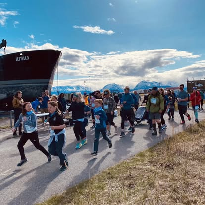

President

The volunteers behind the club
The Kachemak Bay Running Club is run entirely by volunteers who love this community and its trails. Meet the people keeping Homer running, and consider joining them.
Officers
Board officers
Elected volunteers who guide the club, organize races and steward its mission.
Vice President
Alec McLaughlin
Secretary
Randy Wiest
Treasurer
Matthew Smith
Board members at large
At-large members
Community voices who bring ideas, hands and heart to everything the club does.
Member at Large
Bob Ostrom
Member at Large
Bill Steyer
Member at Large
Judy Steyer
Member at Large
Christina De La Torre
Get involved
Want a seat at the table?
Our board is made up of volunteers, and we are always looking for new members who want to help shape the future of running in Homer. Whether you love organizing races, mentoring young runners, keeping the books, or just bringing energy and ideas, there is a place for you.
Shape the season
Help plan races, programs and community events across the year.
Grow the community
Welcome new runners and walkers and support youth programs.
Every volunteer counts
Give a little, get a lot back
You do not have to join the board to help. Volunteer at a race, sweep a course, or hand out water. Reach out and we will find a spot for you.